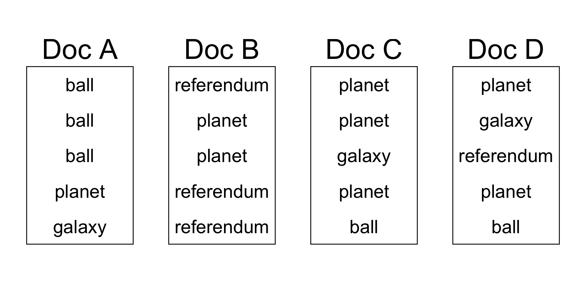
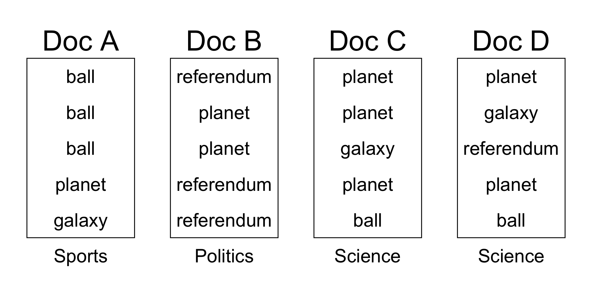
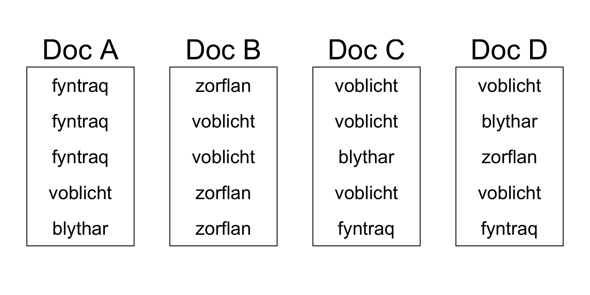
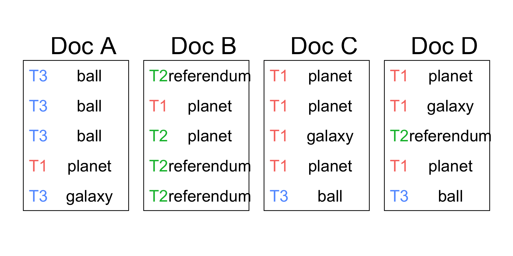
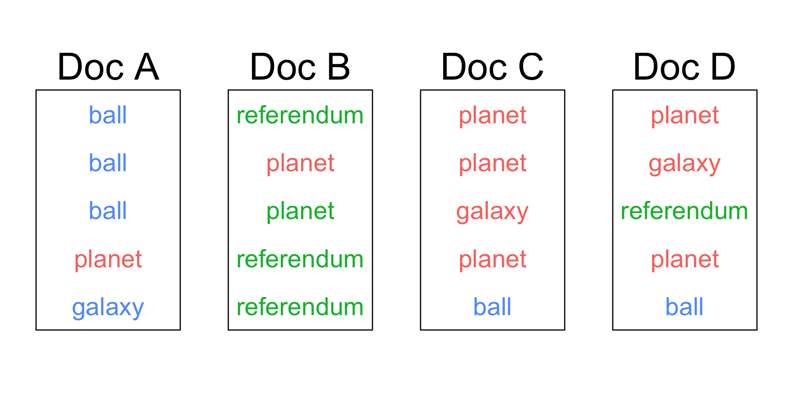
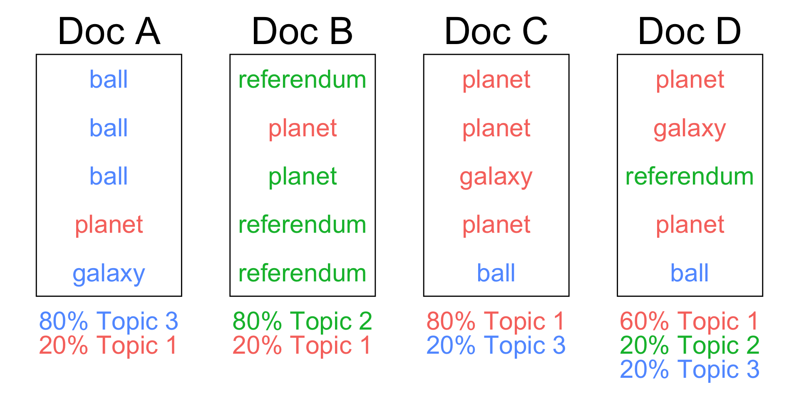
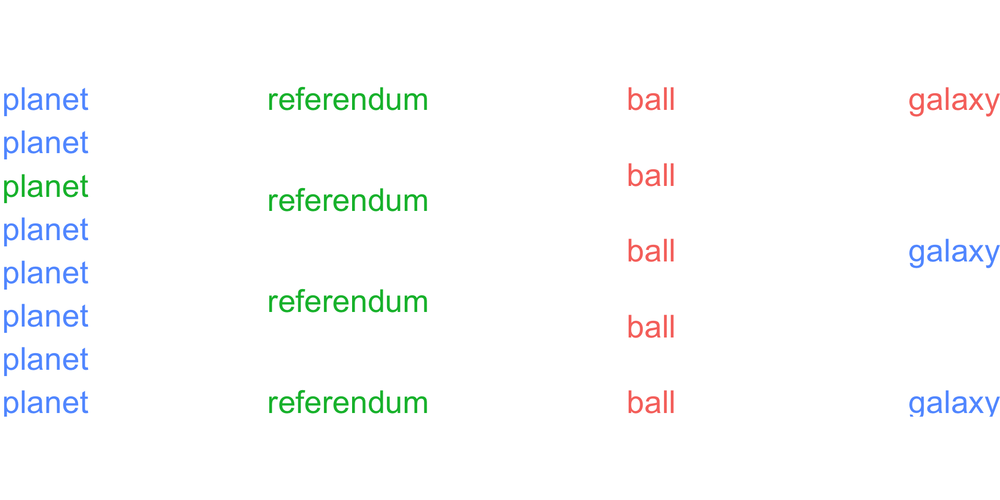
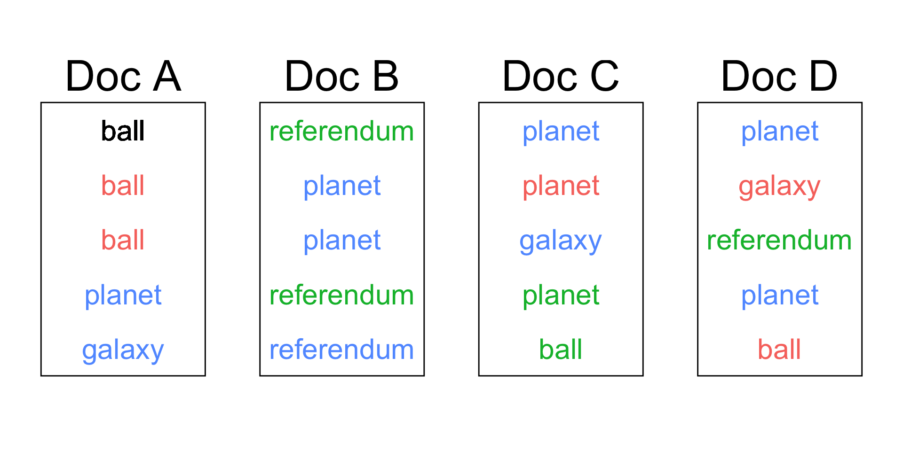
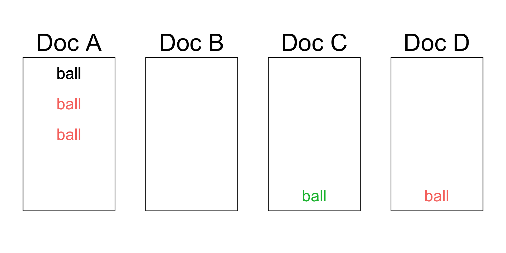
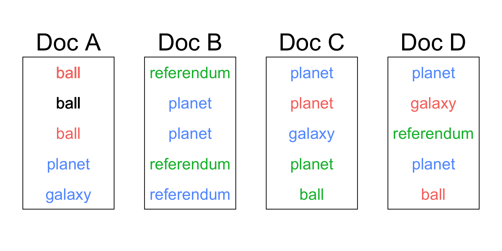

latent Dirichlet allocation
December 4, 2024
Agenda 12/04/24
- LDA
- who does statistics / data science?
LDA
In natural language processing, latent Dirichlet allocation (LDA) is a Bayesian network (and, therefore, a generative statistical model) for modeling automatically extracted topics in textual corpora… In this, observations (e.g., words) are collected into documents, and each word’s presence is attributable to one of the document’s topics. Each document will contain a small number of topics.
From https://en.wikipedia.org/wiki/Latent_Dirichlet_allocation
Toy example of LDA
How can we figure out (unsupervised!) the underlying topic of each of a set of documents?1
Data
Start with documents that each contain words:
Assign topics
As a human, assign topics: Science, Politics, Sports
One potential assignment:

No intuition
What if you don’t have any idea what the words mean (i.e., what if you are the computer)?

Computer assignment of topics
without using the definitions of the words:
Topic 1 , Topic 2, Topic 3

Assign a topic to each word

Assign a topic to each word

Topic frequency

Article property
Property 1: articles are as homogeneous as possible
What about the words?

Word property
Property 2: words are as homogeneous as possible
Goal of LDA:
Color each word with red , green, blue such that
- articles are as homogeneous as possible
- words are as homogeneous as possible
Gibbs Sampling
Organize the words one at a time, trying to make the articles (Goal #1) and words (Goal #2) as consistent as possible.
\(\Rightarrow\) assume that all the other words are correct, and try to predict the topic of a given word.
Predicting the word’s topic

Do we color ball red , green, or blue?
Predicting the word’s topic (Goal #1)
| Topic 1 | Topic 2 | Topic 3 |
|---|---|---|
| Doc A: how many words in Topic 1 | Doc A: how many words in Topic 2 | Doc A: how many words in Topic 3 |
| 2 | 0 | 2 |
Predicting the word’s topic (Goal #2)

| Topic 1 | Topic 2 | Topic 3 |
|---|---|---|
| How often is ball in Topic 1 | How often is ball in Topic 2 | How often is ball in Topic 3 |
| 3 | 1 | 0 |
Data without first word
| Topic 1 | Topic 2 | Topic 3 |
|---|---|---|
| Doc A: how many words in Topic 1 | Doc A: how many words in Topic 2 | Doc A: how many words in Topic 3 |
| 2 | 0 | 2 |
| How often is ball in Topic 1 | How often is ball in Topic 2 | How often is ball in Topic 3 |
| 3 | 1 | 0 |
Probability of topic
\[ \begin{align}P(z_i = k' | z_{-i}, W) \propto & \frac{\# \mbox{ words in $d_i$ with $k'$} + \alpha}{\# \mbox{ words in $d_i$ with any topic} + K \cdot \alpha} \cdot \\ &\frac{\# \mbox{ times $i^{th}$ word is in topic $k'$} + \beta}{\# \mbox{ words in topic $k'$} + V \cdot \beta} \end{align} \]
- \(z_i\) is the topic of the \(i^{th}\) word
- \(z_{-i}\) are the topics of all the words other than the \(i^{th}\) word
- \(d_i\) is the document of \(i^{th}\) word
- \(W\) represents all of the words
- \(K\) is the total number of topics
- \(V\) is the total number of words
- \(\alpha\) and \(\beta\) are tuning parameter
Probability that ball is in each topic
\[ \begin{align}P(ball_1 = \mbox{Topic 1} | z_{-i}, W) \propto& \frac{2 + \alpha}{4 + 3 \cdot \alpha} \cdot \frac{3 + \beta}{5 + 4 \cdot \beta} \end{align} \]
\[ \begin{align}P(ball_1 = \mbox{Topic 2} | z_{-i}, W) \propto& \frac{0 + \alpha}{4 + 3 \cdot \alpha} \cdot \frac{1 + \beta}{5 + 4 \cdot \beta} \end{align} \]
\[ \begin{align}P(ball_1 = \mbox{Topic 3} | z_{-i}, W) \propto& \frac{2 + \alpha}{4 + 3 \cdot \alpha} \cdot \frac{0 + \beta}{5 + 4 \cdot \beta} \end{align} \]
Probability that ball is in each topic
\[ \require{cancel} \begin{align}P(ball_1 = \mbox{Topic 1} | z_{-i}, W) \propto& \frac{2 + \cancel{\alpha} \overset{0.3}{}}{4 + 3 \cdot \cancel{\alpha} \overset{0.3}{}} \cdot \frac{3 + \cancel{\beta} \overset{0.25}{}}{5 + 4 \cdot \cancel{\beta} \overset{0.25}{}} = 0.2543 \end{align} \]
\[ \begin{align}P(ball_1 = \mbox{Topic 2} | z_{-i}, W) \propto& \frac{0 + \cancel{\alpha} \overset{0.3}{}}{4 + 3 \cdot \cancel{\alpha} \overset{0.3}{}} \cdot \frac{1 + \cancel{\beta} \overset{0.25}{}}{5 + 4 \cdot \cancel{\beta} \overset{0.25}{}} = 0.0128 \end{align} \]
\[ \begin{align}P(ball_1 = \mbox{Topic 3} | z_{-i}, W) \propto& \frac{2 + \cancel{\alpha} \overset{0.3}{}}{4 + 3 \cdot \cancel{\alpha} \overset{0.3}{}} \cdot \frac{0 + \cancel{\beta} \overset{0.25}{}}{5 + 4 \cdot \cancel{\beta} \overset{0.25}{}} = 0.0196 \end{align} \]
\(\rightarrow\) assign Topic 1 to the first instance of ball
Next step
Update the first instance of ball and move on to the second instance of ball. (Keep iterating!)

What is the topic of a training document?
\[\mbox{Topic}(d) = \mbox{arg} \max_k \theta_{d,k}\]
where \(\theta_{d,k}\) is the probability of topic \(k\) for document \(d\).
\(\theta_{d,k}\) is estimated as the proportion of topic \(k\) in document \(d\).
What is the topic of a test document?
For each word in the document, you get a probability for each topic, based on the learned topic-word distribution
The probability of a topic \(k\) for the new document is essentially the weighted sum of the topic probabilities for all the words in the document, considering their relative importance.
Example (from Math 154)
Statisticians & Data Scientists
Who does statistics?
connecting, uplifting, and recognizing voices – a database of statisticians and data scientists.
Footnotes
Heavily inspired by Luis Serrano’s youtube video. Also note his other educational materials↩︎